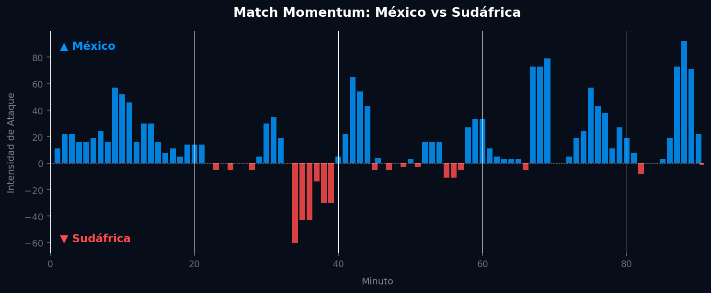

📝 Crónica y Análisis Posterior (Post-Partido)
🔮 GANADOR ACERTADO
⚽ Resumen del Partido (Resultado Real: México 2 - 0 Sudáfrica)
En un emocionante debut mundialista, México logró imponerse por 2-0 ante Sudáfrica. El equipo dirigido por Jaime Lozano hizo valer su localía y su asfixiante presión alta para forzar errores en la salida de los "Bafana Bafana". Aunque la falta de contundencia volvió a ser evidente, la insistencia y velocidad por las bandas permitieron abrir el marcador. Sudáfrica intentó reaccionar a través del circuito liderado por Modiba en la banda izquierda, pero la sólida zaga mexicana neutralizó las aproximaciones para sellar los tres primeros puntos del torneo.
🔮 Impacto en el Grupo A y Proyecciones para la Ronda 2
- Ajuste del Algoritmo: Tras la victoria, México se posiciona firmemente en el liderato del Grupo A. El modelo Poisson bivariado incrementa las métricas de expectativa ofensiva (xG) para México de cara a la segunda fecha.
- Proyección de la Segunda Ronda de Grupos:
- México vs Corea del Sur: Duelo clave para encaminar la clasificación. El modelo predictivo proyecta un escenario de alta intensidad donde México parte como favorito con un 52% de probabilidad de triunfo, debiendo cuidar la velocidad en transición de los asiáticos.
- Rep. Checa vs Sudáfrica: Ambos necesitados de sumar. Los checos son ligeros favoritos con un 45% de probabilidad de victoria ante un conjunto sudafricano que debe corregir los espacios dejados a la espalda de sus laterales.
📈 Análisis del Match Momentum
México dictó el ritmo del encuentro, evidenciado por su liderazgo en intensidad durante el 66.0% del partido y un pico ofensivo de 92.00 en el minuto 88', reflejando una presión constante y decisiva hasta los compases finales. En contraste, Sudáfrica mostró una capacidad limitada para generar peligro sostenido, dominando la intensidad solo el 20.2% del tiempo y alcanzando un modesto pico de 60.00 en el minuto 34'. Esta disparidad en la magnitud y persistencia de las fases de ataque impactó directamente en el desarrollo, donde los momentos de mayor peligro fueron constantemente generados por el equipo local. La correlación con el marcador 2-0 es clara: México capitalizó su superioridad táctica y ofensiva, manteniendo una amenaza persistente que se tradujo en goles, mientras Sudáfrica no pudo convertir su breve período de mayor empuje en acciones concretas que alteraran el resultado.
Gráfico: Match Momentum (Intensidad de Ataque)

🇲🇽 México: Análisis Táctico
Ventajas
- Presión alta asfixiante: Como se observa en el mapa defensivo, el equipo tiene una gran densidad de acciones defensivas (presiones y recuperaciones) en territorio rival, lo que les permite recuperar el balón muy cerca del arco contrario.
- Peligro hiperlocalizado en banda derecha: Según el análisis de amenaza esperada (xT), la generación de peligro más alta del equipo (valores superiores a 0.35-0.40) se concentra de manera quirúrgica en el carril derecho del último tercio.
- Volumen de llegada: El equipo tiene facilidad para generar remates, registrando un total de 39 disparos en el torneo.
Desventajas
- Falta de contundencia crónica: A pesar de los 39 disparos registrados, solo lograron concretar 2 goles. Esto denota una baja eficiencia de cara al arco o una selección de tiro mejorable.
- Asimetría predecible: Al volcar casi todo su peligro (xT) por la derecha, si el rival logra bloquear ese sector, el equipo puede volverse plano en ataque.
🇿🇦 Sudáfrica: Análisis Táctico
Ventajas
- Circuito dominante por izquierda: El mapa de calor y el ADN de pases de Aubrey Maphosa Modiba demuestran que el equipo posee una banda izquierda sumamente asociativa, profunda y con un volumen altísimo de pases progresivos y centros al área.
- Amplitud en salida: Tienen zonas de inicio muy claras sobre las bandas tácticas, lo que les permite estirar la cancha en fase de posesión.
Desventajas
- Espacios a las espaldas de los laterales: Al tener un jugador tan profundo y de proyección constante en banda izquierda como Modiba, la transición defensiva en ese costado puede quedar desprotegida si pierden el balón en salida.
📊 Pizarras y Gráficos Tácticos
Mapa Defensivo (México)

Mapa Defensivo (Sudáfrica)

Amenaza Esperada xT (México)

Amenaza Esperada xT (Sudáfrica)

Mapa de Calor (México)

Mapa de Calor (Sudáfrica)

Mapa de Tiros (México)

Mapa de Tiros (Sudáfrica)

ADN de Pases de Modiba (Sudáfrica)

 Sudáfrica
Sudáfrica